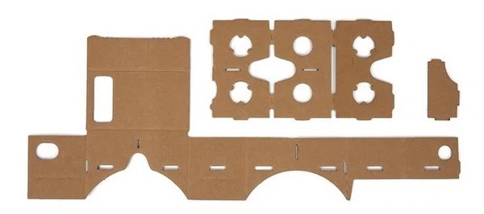
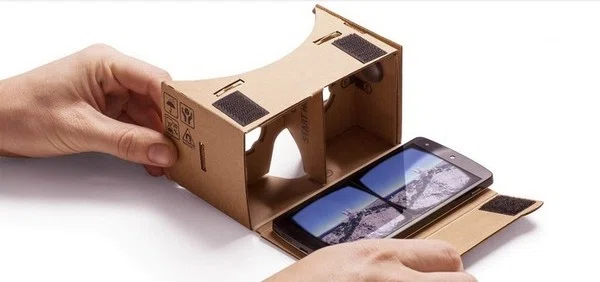

Desenvolver seu próprio Óculos via Google Cardboard
Passo 1. Baixe o kit do Google Cardboard nesse link e imprima o modelo presente no arquivo “Scissor-cut”, feito para o corte à tesoura ou estilete;.

Passo 2. Cole no papelão, que deverá ter pelo menos 22 x 55 cm, com espessura não inferior a 1,5 mm. Em seguida, corte conforme as indicações do esquema, de modo que fique como na imagem abaixo;
Passo 3. Separe as duas lentes, que deverão ser biconvexas assimétricas, com distância focal de 45 mm (as demais especificações constam no guia que vem no kit) e as insira no círculo do molde;

Passo 4. Coloque os velcros, ímãs e elástico conforme o esquema abaixo;

Passo 5. Por fim, baixe o app Cardboard, posicione o smartphone dentro do óculos de papelão e experimente a realidade virtual.
Também assista esse vídeo para mais dicas: